Shop
이토록 가벼운 오늘
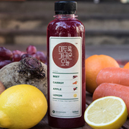- 이토록 가벼운 오늘을 만들고 싶다면 비트가 함유된 주스를 아침마다 간편하게 섭취해보자!
- 지난 한 주동안 자신의 열정을 불태우고 남은 잔해들이 있다면 이토록 가벼운 오늘로 주말의 아침을 말금하게 시작합시다. 적혈구의 활동을 활발하게 도와주는 비트성분이 우리 몸을 빠르게 정화시켜줄 것입니다.
살들아 잘 있거라
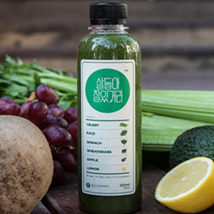- <미안하다 내 몸아>에 이은 회개주스 2탄! 배드파머스 주스 중 가장 낮은 칼로리로 주문 즉시 지겹도록 당신을 쫓아다녔던 '살과의 안녕'을 선포할 것입니다.
- 채소 섭취의 중요성은 알지만 제대로 챙겨먹기 어려운 당신에게 도움을 줄 주스입니다. 6가지의 초록 과채의 환상적인 밸런스로 섭취하기 편하고 당신의 몸은 더욱 가볍게 해줄 것입니다.
늙지 않아
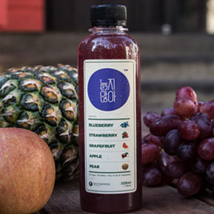- 과일 채소만으로 이런 꿈같은 맛을 낼 수 있을가? 아이들도 좋아하는 '늙지 않아'는 달콤 상큼한 블루베리와 딸기와 달착지그한 배, 사과의 맛으로 우울한 기분을 향기롭게 한다.
- 자연이 아닌 다른 첨가물은 일체 넣지 않았습니다. 5가지의 과일을 품은 늙지 않아는 첨가물로는 따라할 수 없는 오직 과일들만의 어우러짐으로 탄생한 특유의 맛과 색을 자랑합니다.
아주 보통의 하루
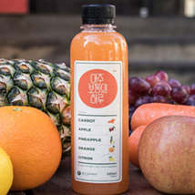- 그런 날 있지 않은가? 지나치케 평범했던 하루. 슬픈 감정도 없고 특별히 기쁜 일도 없는 그런 하루. 어쩌면 이런 아주 보통의 하루가 지치고 삭막한 사회 안에서 가장 행복한 날이 아닐까?
- 당신의 하루를 편안하게 만들어줄 아주 보통의 하루는 당근 베이스에 사과, 파인애플, 오렌지, 유자를 더해 당근 특유의 달콤함과 과일의 상큼함이 돋보이는 주스입니다.
미안하다 내 몸아
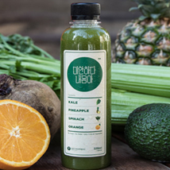- 시금치 싫어! 고기 좋아! 하는 사람에게 추천한다. 오렌지와 파인애플의 적절한 조화로 녹색 채소의 향긋함이 배가 되어 그동안 고기로 가득 찬 내몸에게 미안했다고 사과할지도 모른다.
- 지난 주말동안 내 몸에 미안했지...? 참담했던 과거를 뒤로 하고 한 주를 다시 시작하자! 케일과 시금치로 몸을 건강하게 정화하고 한 주의 밸런스를 잡아줍니다.
그 시절 그 얼굴
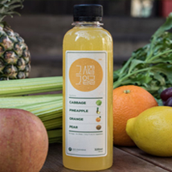- 지난 앨범을 펼쳐보면 그 시절 그 얼굴의 피부가 그립다. 그럴 때는 슬퍼말고 그 시절 그얼굴을 마시자.
- 바쁜 현대인들에 일그러진 식습관으로 망가진 위장에 좋은 양배추를 넣었습니다. 오직 양배추와 과일의 이상적인 배합으로만 양배추 특유의 쌉싸름함은 감추고 그 영양소는 그대로 담아내었습니다.
1일 1우엉
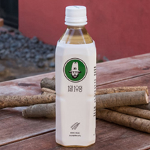- 식품점가물로 가득한 음료로 우리 몸에 수분공급이 제대로 되고 있는지 돌아봐야합니다. 땅속 깊숙이 뿌리내리는 우엉은 땅의 기운과 각종 영양 및 미네랄을 흡수하며 자랍니다. 1일 1우엉으로 땅속의 기운을 느껴보세요. 하루하루 당신의 몸이 가벼워질 수 있도록 도와줄 것입니다.
깔라만시 클렌즈
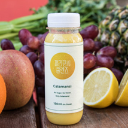- 베트남 현지에서 제품의 우수 여부, 불량 유무를 꼼꼼하게 검수한 배드파머스 깔라만시!
물 한 방울 없이 깔라만시 원액만 짱짱하게 담은 100%! 식품 안전 관리인증(이하HACCP)을 받아 더욱 안전합니다. - 레몬의 30배가 넘는 비타민c가 함유된 깔라만시! 이 귀한 과일은 전 세계에 오직 베트남, 필리핀에서만 재배되어 신의 선물이라고까지 불리는 슈퍼푸드입니다. 특정 기후에서만 나는 깔라만시는 오랜 세월 베트남인들의 건강 비결이었거, 이제는 전 세계에 셀럽과 로푸드인들에게 사랑받고 있습니다.
견과를 안먹은 결과
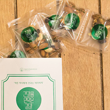- 매일 아침, 저녁 2팩이면 충분하다!!
- 울 엄마는 늘 말씀하셨지.. 니가 아픈 건 견과를 안먹은 결과라고. 그래서 탄생했다. 견과를 안먹으면 어떻게 되는지 결과를 지켜보자고!! 매일 하루 2봉지 챙겨먹자. 아침저녁.
이걸로 버텨바
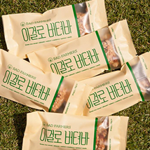- 당신의 출근시간, 공강시간, 간식시간 등 바쁜 시간을 책임질 이걸로 버텨바! 퀴노아, 해바라기씨, 아몬드, 호두, 건포도, 호박씨, 현미 시리얼, 땅콩, 꿀 몸에 좋은 재료만 골라 넣어 만들었습니다.
- 몸아 좋은 재료만 골라 넣어 만들었습니다.
브라질너트
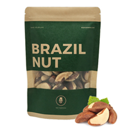- 하루 2~3알이면 충분한 슈퍼푸드. 브라질너트입니다.
- 천연 미네랄의 왕 브라질 너트
블루베리보다 셀레늄 82배 높은 2017년 가장 주목받을 슈퍼푸드!
카카오닙스
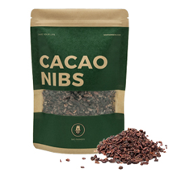- 2017년 대세 슈퍼푸드! 녹차의 201배 카테킨이 많은 카카오닙스!
- 그리스어로 '신의 음식'이란 뜻이며, 초콜릿의 원료가 되는 카카오빈을 발효, 건조한 후 껍질을 분리하고 잘게 부수어 놓은 것입니다. 초콜릿이 되기 바로 직전의 상태라고 생각하면 됩니다.
1일 1병 패키지
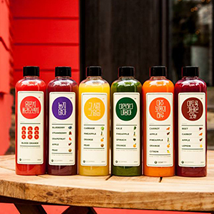- 아침만 꾸준히 챙겨도 의사를 멀리 할 수 있습니다. 바쁜 출근길, 등교길에 꼭 챙겨드세요!
- 아침에 일어난 직후 무엇을 먹는지가 가장 중요합니다. 자고 일어난 다음, 우리 몸을 위해 가장 건강한 비타민과 미네랄을 보충하세요. 하루의 컨디션을 몰라보게 향상시킵니다.
클렌즈 패키지
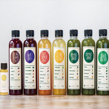- 모든 음식을 끊고 짧은 기간 내에 100% 과일채소 클렌즈 주스만 마시는 클렌즈 프로그램에 들어가보자!
- 배드파머스 주스는 비타민, 미네랄로 가득한 17여 종의 신선한 채소와 과일 외에 어떤 첨가물도 넣지 않고 영양소 파괴가 적은 콜드프레스방식으로 만듭니다. 잠시 동안 모든 음식물 섭취를 끊고 가공되지 않은 자연 그대로의 주스로 몸이 원하는 것에 집중해 부세요.
스키니 패키지
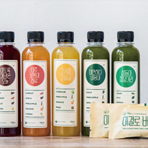- 점심도 챙겨 먹으며 할 수 있는 온화한 클렌즈 프로그램! 3~7일 정도 이 과정을 체험하면 그 후에 소식하는 습관에도 도달할 수 있다.
- 배드파머스 주스는 비타민, 미네랄로 가득한 17여 종의 신선한 채소와 과일 외에 어떤 첨가물도 넣지 않고 영양소 파괴가 적은 콜드프레스 방식으로 만듭니다. 단백질 위주의 한 끼 식단과 함께 5병의 주스를 섭취해보세요. 비교적 온화한 클렌즈 프로그램으로 활동량이 많은 분들도 큰 부담없이 진행할 수 있습니다.
호박즙 패키지
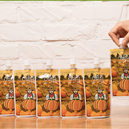- 이제 호박즙으로 다음날 아침 얼굴 관리하세요!
- 호박은 2002년 타임지가 선정한 10대 웰빙푸드이지만, 매일 생으로 먹기엔 불편할 뿐더러, 충분한 양을 섭취하기도 힙듭니다. 하지만, 이런 즙이라면! 하루 식전 3팩으로 충분한 양이 섭취해요. 이제 식전에 하루 3팩으로 얼굴 관리하세요!
이토록 가벼운 오늘
살들아 잘 있거라
늙지 않아
아주 보통의 하루
미안하다 내 몸아
그 시절 그 얼굴
1일 1우엉
깔라만시 클렌즈
견과를 안먹은 결과
이걸로 버텨바
브라질 너트
카카오닙스
1일 1병 패키지
클렌즈 패키지
스키니 패키지
호박즙 패키지